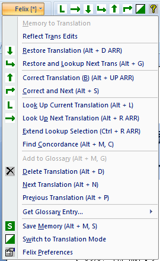
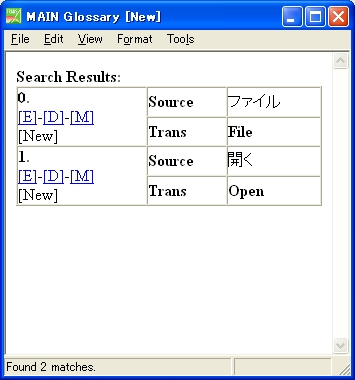
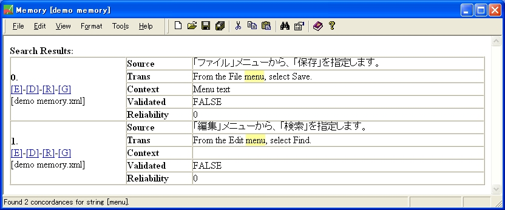

Felix Manual
5.3 Review Mode
Section contents:
5.3.1 Getting Started
5.3.2 Look up a Translation
5.3.3 Navigate through the Matches
5.3.4 Correct a Translation
5.3.5 Add a Glossary Entry
5.3.6 Delete a Translation
5.3.7 Restore from Memory
5.3.8 Get a Glossary Entry
5.3.9 Search for Concordance
5.3.10 Save the Memory
5.3.1 Getting Started
Use Review Mode to review your translation using Felix. Review Mode essentially functions like Translation Mode, except that instead of looking up source text to translate, you are looking up translations for review.
In Review Mode, the toolbar looks like this:
And the menu looks like this:

Note that in Review mode, an asterisk in square brackets ([*]) appears to the right of the menu item. This helps you tell that you are in Review Mode.
Each of the Review Mode functions is described below.
5.3.2 Look up a Translation
To have the suite automatically select the next translation to look up, place
the cursor in front of the sentence, and select
Felix >> Find Next Translation
(or press ALT + →). The Felix interface will
skip any whitespace before the next sentence, and select all the text up to the
next tab, line break, or end-of-sentence marker (e.g. period). The Felix interface will
then send the sentence to Felix for lookup.
Most text formatting information (e.g. bold, italic, font, text color) is preserved in the query. Some formatting information, however, such as highlight color and centered text, is not preserved.
To select the sentence to look up yourself, select a segment of text, then
select Felix >> Find Current Translation (or press
ALT + L).
If you would like to extend the lookup segment beyond the current selection,
then with the current lookup scope selected, select Felix >>
Extend Lookup Sentence (or press Ctrl + →).
Note that unlike Translation Mode, the Query is the translation segment, not the source-language segment. Additionally, the match score is for its similarity with the Trans field of the memory entry, rather than the Source field. See below for a screen shot.
5.3.3 Navigate through the Matches
Sometimes when you look up a translation in your memory, Felix will have more than one suggestion. The number of suggestions, and the number of the current suggestion, will be shown at the bottom right of the suggestion:

In this example, the first of three suggestions (1/2) is being shown.
To view the next suggestion, click on
Next in the Memory window, or from Word,
select Felix >> Next Translation
(or press Alt + N).
Tip: The score for the next translation (in this example 68%) is shown next to the Next link.
To view the previous suggestion, click on
Prev
in the Memory window, or from Word, select
Felix >> Previous Translation
(or press Alt + P).
Tip: The score for the previous translation (in this example 68%) is shown next to the Prev link.
Matches will cycle: If you press Next while on the last suggestion, the first suggestion will be shown; likewise, pressing Prev while on the first suggestion will show the last suggestion.
5.3.4 Correct a Translation
While a translation query is shown in the Memory window
(see 5.3.2 Look up a Translation, above),
place the cursor at the end of your translation, and select
Felix >> Correct Translation
(or press Alt + ↑). The segment from
the start of the original sentence to the current cursor
position is registered as the translation.
To manually select the segment to register as the translation, select a
segment of text, then select
Felix >> Correct Translation
(or press Alt + ↑). The current selection is registered as
the translation.
Tip: Select Felix >> Correct And
Next (or press Alt + S) to register the current
translation, then automatically select and look up the next sentence. This is
equivalent to pressing Alt + ↑, then Alt + →.
5.3.5 Add a Glossary Entry
While you are reviewing, you may want to add terms to your glossary. You can do this easily from inside Word. Simply select the translation of your glossary term, and from the Felix menu, select “Add to Glossary”. Alternatively, you can press ALT + M, then G.
The Add to Glossary dialog box appears. Type in a source for the translation, and click Add. The entry is added to the Felix glossary.
You can find more detailed instructions, including screen shots, here.
5.3.6 Delete a Translation
While a suggestion is being shown in the Memory window
(see 5.3.2 Look up a Translation, above),
select Felix >> Delete Translation
(or press Alt + D), or in the Felix window, press the
Delete link.
A message box will appear, asking if you really want to delete this translation. To delete the translation, click Yes. The currently displayed entry is deleted. If you change your mind, click No . The entry will not be deleted.
5.3.7 Restore from Memory
After you have edited a translation, you may wish to restore the translation stored in the memory, or you may wish to replace the current translation with another from memory.
While a suggestion is being shown in the Memory window
(see 5.3.2 Look up a Translation, above),
select Felix >> Restore Translation
(or press Alt + ↓). The current selection
is replaced by the suggestion.
Tip: Select
Felix >> Restore And Lookup Next Trans
(or press Alt + G) to restore the current
translation, and automatically select and look up the next translation.
This is equivalent to pressing Alt + ↓, Alt + ↑,
then Alt + →.
5.3.8 Get a Glossary Entry
Every time you look up a translation in the memory, the source field of the current match is also searched for matches in all open glossaries. Any matches are displayed in the corresponding Glossary window. This helps you ensure that you are using the technical terms contained in your glossaries, especially if you have mandatory terminology guidelines from your client.

As you are typing, you can retrieve any matches shown in
the Main Glossary window via hot keys. Select Felix
>> Get Glossary
Entry >> Entry {N} (or
press ALT + {N}), where {N} is a number between 0 and 9, to
retrieve that glossary entry. If the number of the entry you wish to retrieve is
higher than 9, then press ALT + M, H (Note that this will not function if the IME is turned on). An input box appears; enter
the entry number and press Return to retrieve the corresponding entry.
5.3.9 Search for Concordance
Oftentimes as you review your translation, you will wonder how you have used a
particular term in previous translations. This is what the Concordance feature is for. Select the term you wish to investigate, then
select Felix >> Find
Concordance (or press Alt + M, C). Any entries in the memory containing that term in
the Trans field appear in the Memory window:

5.3.10 Save the Memory
A prudent backup strategy will save you future headaches
in any computing situation, and Felix is no exception. In order to
facilitate saving the memory and glossaries, you can perform this from Word via
a keyboard shortcut: Just press Alt + M, S to save your
current memory and glossaries (Note that this will not function if the IME is turned on).
You can also do this from the menu, by selecting Felix >> Save Memory.